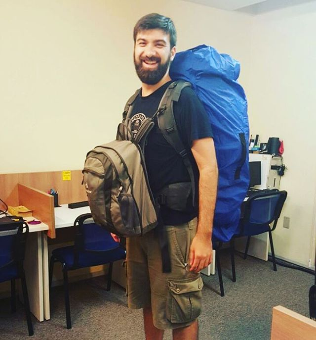
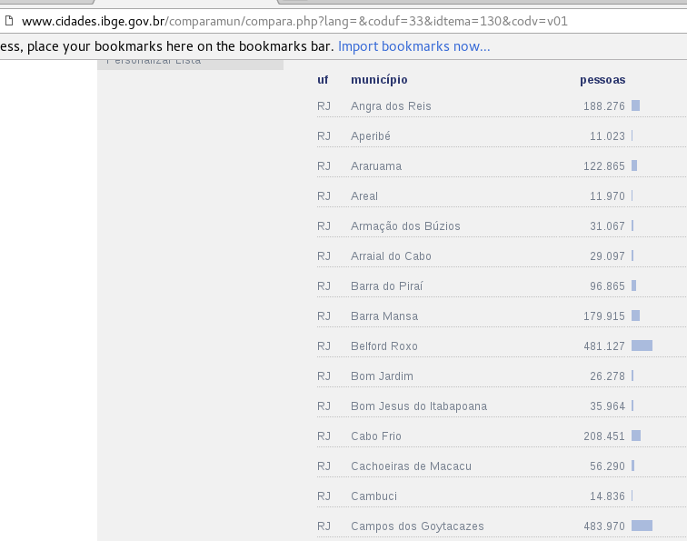
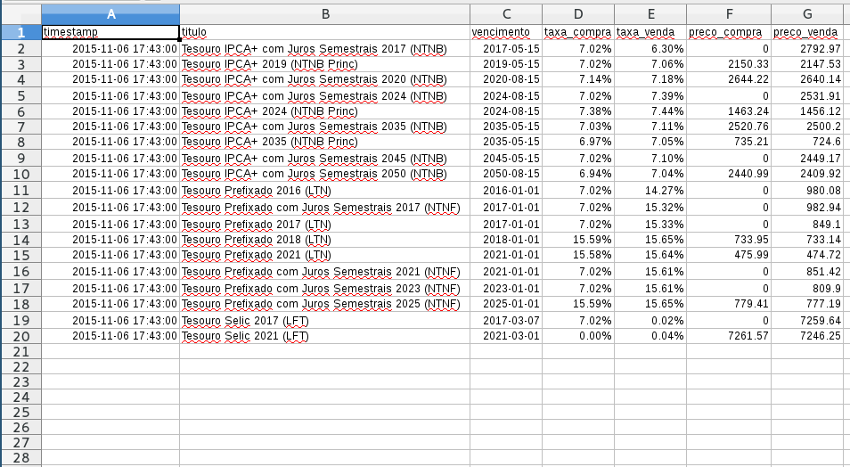

Python
(para quem nunca programou na vida)
Turicas aka Álvaro Justen
13º Fórum Espírito Livre, Santa Teresa/ES
9 de junho de 2016
Turicas, prazer! =)
Sigam-me os bons:
{twitter,
github,
youtube,
slideshare,
instagram}
/turicas
alvaro@CursoDeArduino.com.br
turicas.info
Quem sou eu?

Quem sou eu?

Quem sou eu?
- Não tenho graduação
- Não trabalho em empresa
Software Livre

Python

Arduino

CursoDeArduino.com.br


Slides:
bit.ly/python-13fes
Python
- Linguagem de programação de uso geral
- O que é uma linguagem de programação?
- Very High Level Language
- Multiplataforma
- Sintaxe simples e clara
- Fácil de aprender
- Altamente extensível
- Software livre
- Criada por Guido van Rossum em 1989
- Comunidade maravilhosa!
- (me apaixono cada dia mais
 )
)
Guido van Rossum

Monty Python

Tipos básicos
(bora codar)
i = 42 # inteiro
f = 3.14 # ponto flutuante
c = 1.5 + 5.3j # complexo!
s = "Arduino" # string
t = (1, "python") # tupla
l = [1, 2.3, "ab", [1, "b"]] # lista
d = {'a': 1, 2: 'b',
(1, 2): [3, 4]} # dicionário
Nada de parênteses, nada de chaves!
if expressao1:
comando1
if expressao2:
comando2
elif expressao3:
comando3
elif expressao4:
comando4
else:
comando5
Slices em listas e strings
lista = [1, 3, 4, 'Arduino', 'Python']
print lista[1]
print lista[1:4]
for elemento in lista:
print elemento
arquivo = 'nome.txt'
print arquivo[-3:]
print arquivo[5:]
novo_arquivo = 'nome.do.arquivo.txt'
print novo_arquivo.split('.')
print novo_arquivo.split('.')[-1]
extensao = 'nome.do.arquivo.py'.split('.')[-1]
print extensao
Trabalhando com arquivos
arquivo_1 = open('nome.txt')
for linha in arquivo_1:
print linha
arquivo_1.close()
arquivo_2 = open('nome-2.txt', 'w')
arquivo_2.write('Python rules!')
arquivo_2.close()
Navegando com Python
import urllib
url = 'http://CursoDeArduino.com.br/'
pagina = urllib.urlopen(url)
print pagina.read()
HTML

XLS
import rows
tabela = rows.import_from_xls('tesouro-direto.xls')

pythonnordeste.org
9 a 11 de junho
Teresina/PI

fisl.org.br
13 a 16 de julho
Porto Alegre/RS 

pythonsudeste.org
2 e 3 de setembro
Belo Horizonte/MG 

pythonbrasil.org.br
13 a 18 de outubro
Florianópolis/SC